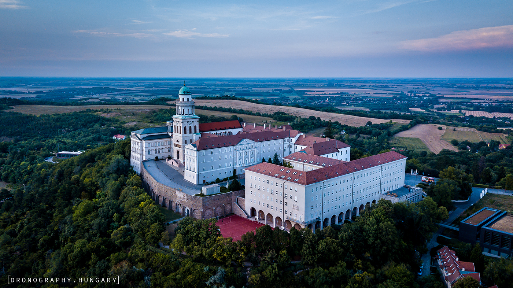

A bencések által épített hajdani Szent Márton-monostor volt az egyik legjelentősebb központ ahonnan a kereszténység elterjedt Magyarországon. A szerzetesek 996-ban jelentek meg a dombvidéken, a monostor alapítása Géza fejedelemhez köthető, majd I. (Szent) István főapátsági rangra emelte. A ma is látható templom a harmadik ezen a helyen, legrégebbi megmaradt eleme a két korábbi épület romjaira emelt, 1255-ben felszentelt társkáptalani templom. Feltételezhető, hogy a kórus alatti kripta is a korábbi templom alapjaira épült. Az épületegyüttesben számos román és gótikus stílusú műalkotás látható. 1472-ben az uralkodó tulajdonában került és elkezdték felújítani, ekkor épült a késő gótikus kerengő is. Később a kolostor egy tűzvészben károsodott, majd 1594-ben a törökök elfoglalták. A szerzetesek 1638-as visszatérése után épültek az apátság barokk stílusú részei, köztük a refektórium. A 19. század első felében klasszicista stílusban átépítették az apátság egyes részeit, ekkor készült el az 55 méter magas nyugati torony és a könyvtár díszterme, ahol értékes kéziratokat és ősnyomtatványokat is őriznek. Az épületegyüttesben jelenleg is élnek szerzetesek akik egy iskolát is működtetnek.
